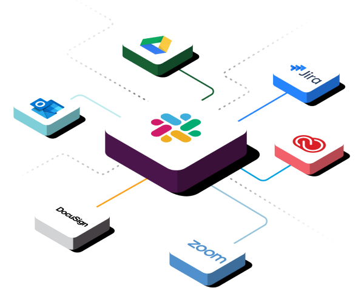
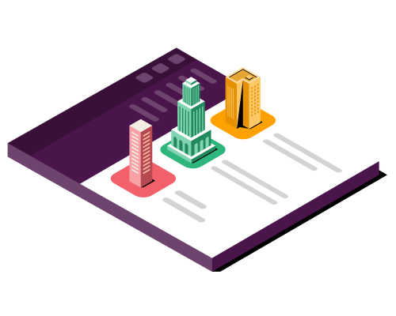

- Features
- Solutions
- Enterprise
- Resources
- Pricing

EXTERNAL COMMUNICATION AND COLLABRATION
A better way to connect with people outside your company
Slack Connect transforms the way you work alongside your partners, vendors or customers by moving conversations out of siloed email threads and into the same place.
Whether you're working with vendors or sealing deals with a client, Slack Connect is here to help.
faster deal cycles for a sales team
decrease in backlog tickets for a customer support team
faster close in company acquisition for a business development team
Claims and figures based on specific teams using Slack Connect at their companies. Results may vary at your organisation.
Connect securely with outside organisations
Keep your work secure with Slack’s enterprise-grade security features and compliance standards
Gain secure access to communicate and collaborate confidently with partner organisations
Reduce your team’s exposure to the email phishing and spam attacks that come with email
Bring communication out of inboxes and into channels, where you can work quickly and collaboratively with outside organisations
Strengthen client relationships in channels to provide top-tier enterprise support and drastically decrease response times
Send messages and share files in real time to build collective insights along the way
Get started with Slack Connect
Easily book meetings, share documents and simplify various other routine tasks with apps
Streamline processes and speed up collaboration by building and connecting new workflows across organisations
How to get started
It only takes a few clicks to start working closely with vendors, customers and more
1. Create the channel
Click the + button next to Channels in your sidebar. Name the channel, and click Create.
2. Send the invite
Invite your partner right from Slack. If you're on the Business+ or Enterprise Grid subscription, you can also copy and share the link provided.
3. Wait for your partner
After they click on the link, they’ll be taken back to Slack to accept and set up the channel on their end.
4. Get admin approval
Depending on your settings, the invitation may be sent to an admin on each team for approval.
Built for roles of all types
Slack Connect allows you to build deeper relationships with all the people that you work with, no matter the profession.
Join the 350,000+ organisations working in Slack Connect
'Slack helps us to drive a cluture of one global team that is accessible and works closely and cohesively together to deliver great things for our clients and users.'
Andrew Walsh
CEO
Learn more about Slack Connect
Frequently asked questions
It Slack Connect Free?
How do I start working with someone outside my company in Slack?
What’s the difference between Slack Connect and Slack channels?
How is Slack Connect more secure than email?
What are some recommended use cases for Slack Connect?
Interested in Slack Connect?